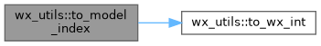
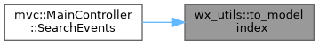
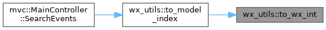

- Generated by
 1.9.8
1.9.8
|
LogViewer
A modern log viewer with AI-assisted analysis (Qt 6)
|
Functions | |
| long | to_wx_long (size_t value) noexcept |
| Safely convert size_t to long for wxWidgets APIs. | |
| int | to_wx_int (size_t value) noexcept |
| Safely convert size_t to int for wxWidgets APIs. | |
| unsigned int | to_wx_uint (size_t value) noexcept |
| Safely convert size_t to unsigned int for wxWidgets APIs. | |
| size_t | from_wx_long (long value) noexcept |
| Safely convert long to size_t. | |
| size_t | from_wx_int (int value) noexcept |
| Safely convert int to size_t. | |
| size_t | from_wx_uint (unsigned int value) noexcept |
| Safely convert unsigned int to size_t. | |
| unsigned int | int_to_uint (int value) noexcept |
| Safely convert int to unsigned int for wxWidgets APIs. | |
| int | uint_to_int (unsigned int value) noexcept |
| Safely convert unsigned int to int for wxWidgets APIs. | |
| int | to_model_index (size_t value) noexcept |
| Safely convert size_t to int for IModel interface. | |
| void | validate_int_range (size_t value) |
| Validate that a size_t value fits in an int. | |
| void | validate_long_range (size_t value) |
| Validate that a size_t value fits in a long. | |
|
inlinenoexcept |
Safely convert int to size_t.
| value | The int value to convert |
|
inlinenoexcept |
Safely convert long to size_t.
| value | The long value to convert |
|
inlinenoexcept |
Safely convert unsigned int to size_t.
| value | The unsigned int value to convert |
|
inlinenoexcept |
Safely convert int to unsigned int for wxWidgets APIs.
| value | The int value to convert |
|
inlinenoexcept |
Safely convert size_t to int for IModel interface.
| value | The size_t value to convert |


|
inlinenoexcept |
Safely convert size_t to int for wxWidgets APIs.
| value | The size_t value to convert |

|
inlinenoexcept |
Safely convert size_t to long for wxWidgets APIs.
| value | The size_t value to convert |
|
inlinenoexcept |
Safely convert size_t to unsigned int for wxWidgets APIs.
| value | The size_t value to convert |
|
inlinenoexcept |
Safely convert unsigned int to int for wxWidgets APIs.
| value | The unsigned int value to convert |
|
inline |
Validate that a size_t value fits in an int.
| value | The size_t value to validate |
| std::overflow_error | if value > INT_MAX |
|
inline |
Validate that a size_t value fits in a long.
| value | The size_t value to validate |
| std::overflow_error | if value > LONG_MAX |